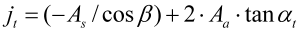
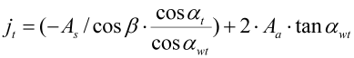
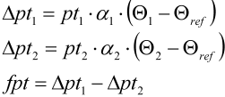

|
|
|


工作侧隙
除了计算 DIN 3967 定义的理论侧隙外，还可以计算安装后的侧隙（包括轮齿偏差、根据 ISO 10064 或 DIN 3964 的轴线偏差误差（参见表 15.24）、形状和安装偏差）以及工作侧隙（包括齿轮与箱体之间的温差）。要计算工作侧隙，需要输入齿轮和箱体的温度范围，以及它们之间的最大和最小温差。同时计算两种情况，一种产生最大工作侧隙（使用给定的温度输入），另一种产生最小工作侧隙。
如果模数 < 1，则根据 DIN 58405 还计算静态评估的圆周侧隙。
然后根据相应的质量等级标准，用公差 Fb、Ff 和 fp 计算由于单齿面偏差引起的侧隙减小量。
对于交错轴斜齿轮，不考虑由于单齿面偏差引起的游隙减小。
也可以考虑跳动误差的影响。此时，对于模数 < 1，使用滚子跳动公差（由近似公式 Fr = Fi'' - fi'' 确定）代替跳动误差 Fr。
| 轴承中心距 LG（公称长度） | 轴线对中精度等级 | |||||||||||
| 1 | 2 | 3 | 4 | 5 | 6 | 7 | 8 | 9 | 10 | 11 | 12 | |
| 最高至 50 | 5 | 6 | 8 | 10 | 12 | 16 | 20 | 25 | 32 | 40 | 50 | 63 |
| 大于 50 且最高至 125 | 6 | 8 | 10 | 112 | 16 | 20 | 25 | 32 | 40 | 50 | 63 | 80 |
| 大于 125 且最高至 280 | 8 | 10 | 12 | 16 | 20 | 25 | 32 | 40 | 50 | 63 | 80 | 100 |
| 大于 280 且最高至 560 | 10 | 12 | 16 | 20 | 25 | 32 | 40 | 50 | 63 | 80 | 100 | 125 |
| 大于 560 且最高至 1000 | 12 | 16 | 20 | 25 | 32 | 40 | 50 | 63 | 80 | 100 | 125 | 160 |
| 大于 1000 且最高至 1600 | 16 | 20 | 25 | 32 | 40 | 50 | 63 | 80 | 100 | 125 | 160 | 200 |
| 大于 1600 且最高至 2500 | 20 | 25 | 32 | 40 | 50 | 63 | 80 | 100 | 125 | 160 | 200 | 250 |
| 大于 2500 且最高至 3150 | 25 | 32 | 40 | 50 | 63 | 80 | 100 | 125 | 160 | 200 | 250 | 320 |
表 15.24：根据 DIN 3964 的轴线偏差误差，数值单位 [mm]
如表所示（参见表 15.24），"轴线位置精度" 和 "轴承间距" 输入字段中的数值用于根据 DIN 3964 计算轴线偏差误差。侧隙根据 DIN 3967 计算。
圆周侧隙计算：
根据 DIN 3967，圆周侧隙在分度圆上用以下公式计算：

在 KISSsoft 中，工作侧隙在工作节圆上使用更精确的公式计算：

还可以考虑中心距、齿厚、齿顶和齿根直径、跳动和制造公差的缩减公差范围。
行星齿轮装置在工作侧隙计算中处理方式不同。此处行星轮有 2 个工作节圆直径（太阳轮/行星轮和行星轮/内齿轮）。由热膨胀引起的工作节圆直径变化在此针对该过程中确定的工作节圆进行定义。
此外，还计算由热膨胀（以及塑料的吸水）引起的齿顶间隙变化。
齿轮本体中出现的任何应变也会改变其齿距。只要两个齿轮显示不相等的应变，就会出现单个法向齿距偏差。由热膨胀引起的齿距增减定义如下：

pt：齿距
a：热膨胀系数
Θ：温度
fpt：单个齿距偏差
塑料也会因吸水而膨胀。
Operating backlash
In addition to calculating the theoretical backlash as defined in DIN 3967, the backlash after mounting (including toothing deviations, deviation error of axis according to ISO 10064 or DIN 3964 (see Table 15.24), form and mounting deviations) and the operating backlash (including the temperature differences between the gears and the housings) can also be calculated. To calculate the operating backlash, input a temperature range for the gears and the housing, and the maximum and minimum difference in temperature between them. Two cases are calculated simultaneously, one that produces the maximum operating backlash (with the given temperature inputs), and one that produces the minimum operating backlash.
If the module < 1, the statically evaluated circumferential backlash is also calculated according to DIN 58405.
The reduction of the backlash due to single flank deviations is then calculated with tolerances Fb, Ff and fp according to the corresponding quality standard.
The reduction in clearance due to single flank deviations is not taken into account for crossed helical gears.
The effect of the runout error can also be taken into consideration. In this case, the roller runout tolerance (determined using the approximation formula Fr = Fi'' - fi'') is used instead of the runout error Fr for module < 1.
| Bearing center distance LG (nominal length) | Axis alignment accuracy class | |||||||||||
| 1 | 2 | 3 | 4 | 5 | 6 | 7 | 8 | 9 | 10 | 11 | 12 | |
| up to 50 | 5 | 6 | 8 | 10 | 12 | 16 | 20 | 25 | 32 | 40 | 50 | 63 |
| more than 50 and up to 125 | 6 | 8 | 10 | 112 | 16 | 20 | 25 | 32 | 40 | 50 | 63 | 80 |
| more than 125 and up to 280 | 8 | 10 | 12 | 16 | 20 | 25 | 32 | 40 | 50 | 63 | 80 | 100 |
| more than 280 and up to 560 | 10 | 12 | 16 | 20 | 25 | 32 | 40 | 50 | 63 | 80 | 100 | 125 |
| more than 560 and up to 1000 | 12 | 16 | 20 | 25 | 32 | 40 | 50 | 63 | 80 | 100 | 125 | 160 |
| more than 1000 and up to 1600 | 16 | 20 | 25 | 32 | 40 | 50 | 63 | 80 | 100 | 125 | 160 | 200 |
| more than 1600 and up to 2500 | 20 | 25 | 32 | 40 | 50 | 63 | 80 | 100 | 125 | 160 | 200 | 250 |
| more than 2500 and up to 3150 | 25 | 32 | 40 | 50 | 63 | 80 | 100 | 125 | 160 | 200 | 250 | 320 |
Table 15.24: Deviation error of axis according to DIN 3964, values in [mm]
As shown in Table (see Table 15.24), the values in the Axis position accuracy and Distance between bearings input fields are used to calculate the axis deviation error according to DIN 3964. Backlashes are calculated according to DIN 3967.
Circumferential backlash calculation:
The circumferential backlash is calculated on the reference circle with the following formula, according to DIN 3967:
In KISSsoft, the operating backslash is calculated in the operating pitch circle, using the more precise formula:
Reduced tolerance ranges for the center distance, tooth thickness, tip and root diameter, runout and manufacturing tolerances can also be taken into account.
Planetary gear units are handled differently in the operating backslash calculation. Here, there are 2 operating pitch diameters for the planets (sun/planet and planet/internal gear). The change in operating pitch diameter due to thermal expansion is defined here for the operating pitch circle determined in this process.
In addition, the change in tip clearance due to thermal expansion (and water absorption for plastics) is also calculated.
Any strains that occur in the body of the gear also change its pitch. A single normal pitch deviation occurs as soon as both gears show unequal strain. The increase or decrease in pitch caused by thermal expansion is defined as follows:
pt: pitch
a: coefficient of thermal expansion
Θ: temperatures
fpt: single pitch deviation
Plastics also expand due to water absorption.